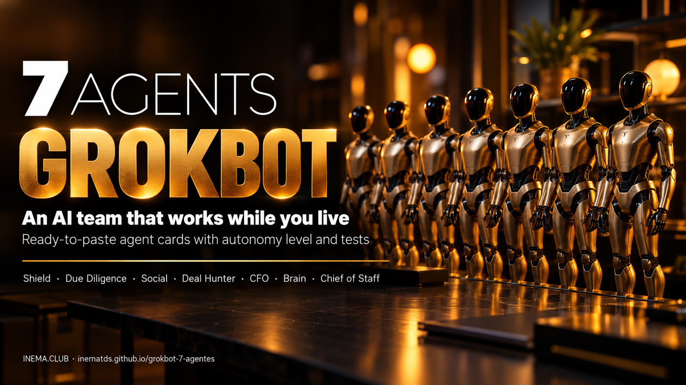

Ready-made cards to paste into GrokBot, with clear limits on what each agent can do on its own.

This is a kit with seven ready-made agents for people who use GrokBot, xAI's agent assistant. Each agent comes on a card: a text to paste into GrokBot, what it can and can't do on its own, three tests to run before you trust it and a short follow-up routine. Together, they watch your email, check contracts, look after your social media, request quotes, keep an eye on your finances, store the team's memory and coordinate everything. To use it, all you need is GrokBot and to connect the apps each card points to.
Creating a bot is easy. The hard part is getting it to do the right thing without you watching all the time. That is why each agent comes in INEMA's Agent Card format, with 7 principles: mission, context, data, success criteria, autonomy, observation and supervision.
A text to paste into GrokBot. You only fill in what is between [brackets]: your emails, your topic, your budget.
Each agent has a level from N0 (read-only) to N4 (runs a whole process). Anything involving money or talking to outsiders waits for your OK.
Three tests to run before you trust it and a checklist of 2 minutes a day and 10 a week. You adjust one rule at a time.
Start with the work that takes up most of your week. The Brain and the Chief of Staff come last, once there are agents to coordinate.
More bots is not better: six bots are six conversations to keep up with. Create a separate bot only if it needs at least one of these three things. If it doesn't, just ask the Chief of Staff directly.
Its notes would mess up another bot's (e.g. the Deal Hunter's supplier history).
It needs to read while the other writes, or one can spend and the other can't (e.g. the CFO is read-only).
It runs on a schedule or trigger of its own (e.g. the Shield at 7 am, the Chief's summary at 8 am).
No technical knowledge. If you can write a message, you can set up these agents.
A GrokBot (xAI) account. It has a weekly usage quota: badly configured routines burn through the quota quickly, and the CFO agent helps you keep an eye on that.
Connect to GrokBot whatever each card asks for: Gmail or Outlook, a contracts folder, a bank in read-only mode. To connect any service, ask: "I want to connect to [service]. What do you need?"
Only for some agents: a post-scheduling tool with automatic DMs (Social), a wallet with a spending limit (Deal Hunter) and a database (Brain). The names used as examples are on each card.
If any word on the cards is new to you, it is here.
The same path works for all seven. Build one, let it run for a week, then build the next.
Don't start with all seven. Pick one: email (Shield), contracts (Due Diligence), social media (Social), quotes (Deal Hunter) or spending (CFO).
In the The 7 agents section, open "See ready-made instruction" and click copy. The full card, with the 7 principles, is on GitHub.
Paste the text into a new conversation in GrokBot and replace what is between [brackets] with your details. GrokBot creates the bot with a name, mission and rules.
# example, in the Shield Emails: you@gmail.com, contact@yourcompany.com Phone number(s): +1 555 123 4567
Connect what the card asks for and confirm the schedule. An API key (from a scheduling tool, for example) goes into the secure field that GrokBot opens, never in the middle of the conversation.
I want to connect my Gmail and my Outlook. Run this bot every day at 7 am.
Every card has three tests: missing information, forbidden request and alarm. If the bot gets one wrong, adjust the rule in the instruction and test again.
Read the report, approve whatever is waiting for your OK. Once a week, adjust just one rule: open the bot's conversation in GrokBot and tell it the change. Write down what broke in a spreadsheet or notebook of your own, copying the "Failure log" table from the end of the card.
Change a rule: email from the tax authority always goes to the review list, never to the inbox.
With two or more agents running, set up the Brain (a database that becomes everyone's memory) and then the Chief of Staff (a summary at 8 am with everything that needs you). The database is the meeting point: the instructions already tell each bot to store its own report there, and the Chief reads from it. Connect the same database to each bot.
# in each bot that existed before the Brain Connect to the same database as the Brain and store each report there as "report from [THIS BOT'S NAME]", with the date.
Each card shows the level, when it runs and what to connect. Open it to copy the ready-made instruction. The full card (7 principles, tests, checklist) is at the GitHub link.
Reads your inbox and spam every day, rescues good email that landed in the trash, flags scams (such as a change of bank details) and finds your phone number on people-search sites.
Your second pair of eyes before you sign: checks the person or company in 4 places (official records, reviews, X and news), reads the fine print and points out what doesn't add up.
Researches trends on X, prepares posts in your voice and sets up the automatic keyword DM: comment → follow → email → link. Customers come from the conversation, not just from the post.
Finds suppliers, requests quotes from an email inbox of its own, compares at least 3 proposals and haggles. Buys only with your OK and within the limit you set.
The chief financial officer without hands: finds duplicate subscriptions, expensive tools with little use, forgotten money owed to you and how much of GrokBot's weekly quota each bot uses.
The team's memory. Each GrokBot bot's memory is a summary that stays with it alone; the Brain keeps everything word for word in a database that all the bots consult. The other bots only add reports; organizing and deleting is up to it.
Your single point of contact: reads everyone's reports, hands out tasks and delivers to you at 8 am what needs you, what is done and what is stuck. Approves nothing in your place.
The level comes from a fixed rule: if it involves money, something that can't be undone or outsiders, the agent prepares and you approve. When in doubt, the lower level.
To move up a level, each card states the condition (e.g. 4 weeks approving without corrections). The agent proposes, you decide. The cards were written by INEMA based on a public class about agents on GrokBot (in English), the "reference class" mentioned on the cards. They are not the class's texts. Run the 3 tests on your GrokBot before you trust it.